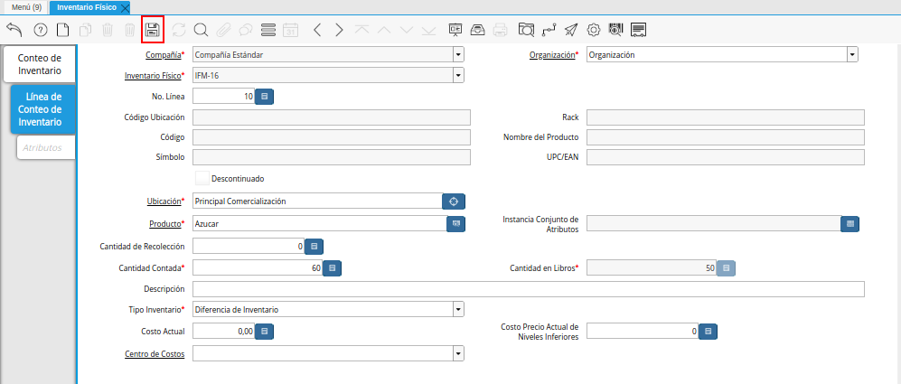

Registro de Inventario Físico¶
Para visualizar completamente el procedimiento del inventario físico, es generado el reporte “Detalle de Almacenamiento” seleccionando la ubicación donde será realizado el inventario físico y el producto por el cual es realizado dicho inventario. Ejemplificando el caso, el reporte puede ser visualizado de la siguiente manera.
Imagen 1. Primer Reporte de Detalle de Almacenamiento

Ubique y seleccione en el menú de ADempiere, la carpeta “Gestión de Materiales”, luego seleccione la ventana “Inventario Físico”.
Imagen 2. Menú de ADempiere

Podrá visualizar la ventana “Inventario Físico”, donde debe seleccionar el icono “Registro Nuevo” para crear un nuevo registro de inventario físico.
Imagen 3. Ventana Inventario Físico y Icono Registro Nuevo
Seleccione en el campo “Organización”, la organización para la cual esta realizando el documento de inventario físico.
Imagen 4. Campo Organización
Introduzca en el campo “Descripción”, una breve descripción referente al documento de inventario físico que esta realizando en la organización seleccionada.
Imagen 5. Campo Descripción|
Seleccione en el campo “Almacén”, el lugar donde es almacenado el producto por el cual se esta realizando el inventario físico.
Imagen 6. Campo Almacén
Introduzca en el campo “Fecha del Movimiento”, la fecha en la cual es realizado en el almacén el conteo real del producto por el cual se esta realizando el inventario físico.
Imagen 7. Campo Fecha de Movimiento
Seleccione el tipo de documento a generar en el campo “Tipo de Documento”, la selección de este define el comportamiento del documento que se esta elaborando, dicho comportamiento se encuentra explicado en el documento Tipo de Documento elaborado por ERPyA.
Imagen 8. Campo Tipo de Documento
Note
Recuerde guardar el registro de los campos de la pestaña seleccionando el icono “Guardar Registros” ubicado en la barra de herramientas de ADempiere.


Seleccione la pestaña “Línea de Conteo de Inventario” y proceda al llenado de los campos correspondientes.
Imagen 9. Pestaña Línea de Conteo de Inventario
Seleccione en el campo “Ubicación”, la ubicación exacta donde se encuentra localizado el producto dentro del almacén seleccionado. El mismo se puede seleccionar con ayuda del identificador ubicado del lado derecho del campo.
Imagen 10. Campo Ubicación
Seleccione en el campo “Producto”, el producto por el cual se esta realizando el inventario físico.
Imagen 11. Campo Producto
Introduzca en el campo “Cantidad Contada”, la cantidad real en existencia del producto seleccionado.
Imagen 12. Campo Cantidad Contada
Note
Debe ser ingresada la cantidad real que existe físicamente en el almacén seleccionado.
Seleccione el icono “Guardar Cambios”, ubicado en la barra de herramientas de ADempiere, para guardar el registro de los campos de la pestaña.

Imagen 13. Icono Guardar Cambios
Podrá visualizar que es cargada automáticamente la cantidad de productos en existencia que se encuentran registrados en ADempiere.
Imagen 14. Campo Cantidad en Libros


Seleccione la pestaña principal “Conteo de Inventario” y luego la opción “Completar”, ubicada en la parte inferior derecha de la ventana.
Imagen 15. Pestaña Conteo de Inventario

Seleccione la acción “Completar” y la opción “OK”, para completar el documento “Inventario Físico” que esta realizando.
Imagen 16. Acción Completar y Opción OK

Consultar Detalle de Almacenamiento¶
Al generar el reporte “Detalle de Almacenamiento” seleccionando la ubicación donde fue realizado el inventario físico y el producto por el cual fue realizado dicho inventario, se puede visualizar el reporte de la siguiente manera.
Imagen 17. Segundo Reporte de Detalle de Almacenamiento